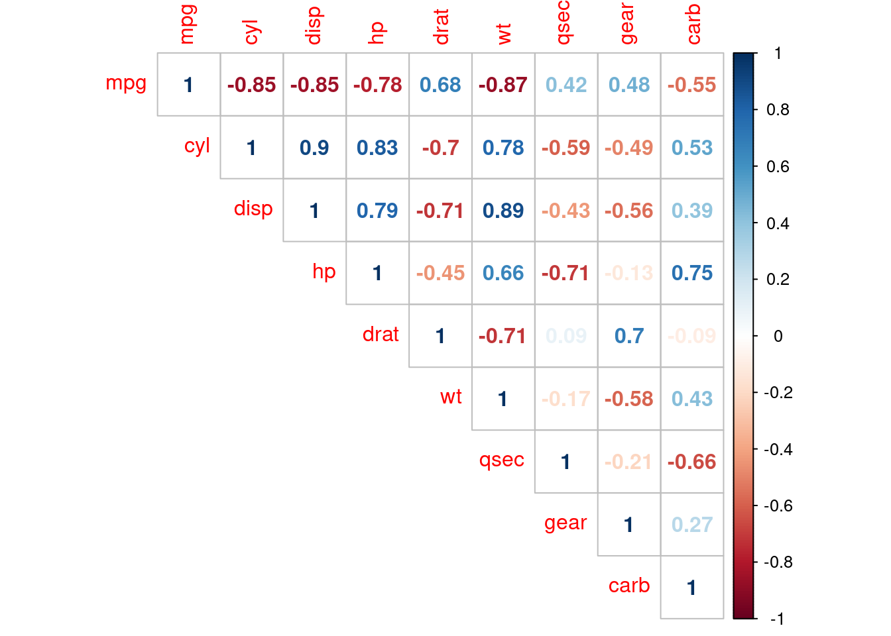

Capítulo 3 Estadística inferencial
La estadísticas descriptiva es la rama de las estadística que tiene como objetivo describir y resumir un conjunto de datos de la mejor manera posible, es decir, con la menor pérdida de información posible. Con la estadística descriptiva no hay incertidumbre, porque describimos solo el grupo de observaciones en las que decidimos trabajar y no se intenta generalizar las características observadas o estudiar un grupo más grande a partir de un conjunto de datos limitado.
Por otro lado, La estadística inferencial es la rama de la estadística que utiliza una muestra aleatoria de datos tomados de una población para hacer inferencias, es decir, sacar conclusiones sobre la población de interés. En otras palabras, la información de la muestra se utiliza para hacer generalizaciones sobre el parámetro de interés en la población.
Las dos herramientas más importantes utilizadas en estadística inferencial son los test de hipótesis y los intervalos de confianza.
3.1 Distribuciones de probabilidad
Una distribución de probabilidad es una función que describe la probabilidad de obtener los posibles valores que puede asumir una variable aleatoria. En otras palabras, los valores de la variable varían según la distribución de probabilidad subyacente.
Supongamos que seleccionamos una muestra aleatoria de personas y medimos la altura de los sujetos. A medida que vamos midiendo las alturas, podemos crear una distribución de alturas. Este tipo de distribución es útil cuando necesita saber qué resultados son más probables, la dispersión de los valores potenciales y la probabilidad de resultados diferentes. Por lo tanto se puede utilizar distribuciones de probabilidad para realizar inferencias.
3.1.1 Funciones de R para distribuciones de probabilidad
R tiene varias funciones para trabajar con cada distribución de probabilidad. Hay un nombre de raíz, por ejemplo, el nombre de raíz para la distribución normal es norm. Esta raíz tiene como prefijo una de las letras:
ppara “probabilidad”, la función de distribución acumulativa.qpara “cuantil”, el inverso de la función de distribución acumulativa.dpara “densidad”, la función de densidad (p. f. o p. d. f.)rpara “aleatorio”, una variable aleatoria que tiene la distribución especificada
Para la distribución normal, estas funciones son pnorm, qnorm, dnorm y rnorm, mientras que para la distribución binomial, estas funciones son pbinom, qbinom, dbinom y rbinom.
Para una distribución continua (como la normal), las funciones más útiles para resolver problemas que involucran cálculos de probabilidad son las funciones p y q, porque la densidad por la función d solo se puede usar para calcular probabilidades a través de integrales.
Para una distribución discreta (como la binomial), la función d calcula la densidad (p. F.), Que en este caso es una probabilidad
\(f(x) = P(X = x)\)
y por lo tanto es útil para calcular probabilidades.
R tiene funciones para manejar muchas distribuciones de probabilidad. La siguiente tabla proporciona los nombres de las funciones para cada distribución y un enlace a la documentación en línea que es la referencia autorizada sobre cómo se utilizan las funciones. Pero no lea la documentación en línea todavía. Primero, pruebe los ejemplos de las secciones que siguen a la tabla.
library(readr) probability_distribution_functions_in_r <- read_csv(“probability-distribution-functions-in-r.csv”)
| Distribution | p | q | d | r |
|---|---|---|---|---|
| Beta | pbeta | qbeta | dbeta | rbeta |
| Binomial | pbinom | qbinom | dbinom | rbinom |
| Cauchy | pcauchy | qcauchy | dcauchy | rcauchy |
| Chi-Square | pchisq | qchisq | dchisq | rchisq |
| Exponential | pexp | qexp | dexp | rexp |
| F | pf | qf | df | rf |
| Gamma | pgamma | qgamma | dgamma | rgamma |
| Geometric | pgeom | qgeom | dgeom | rgeom |
| Hypergeometric | phyper | qhyper | dhyper | rhyper |
| Logistic | plogis | qlogis | dlogis | rlogis |
| Log Normal | plnorm | qlnorm | dlnorm | rlnorm |
| Negative Binomial | pnbinom | qnbinom | dnbinom | rnbinom |
| Normal | pnorm | qnorm | dnorm | rnorm |
| Poisson | ppois | qpois | dpois | rpois |
| Student t | pt | qt | dt | rt |
| Studentized Range | ptukey | qtukey | dtukey | rtukey |
| Uniform | punif | qunif | dunif | runif |
| Weibull | pweibull | qweibull | dweibull | rweibull |
| Wilcoxon Rank Sum Statistic | pwilcox | qwilcox | dwilcox | rwilcox |
| Wilcoxon Signed Rank Statistic | psignrank | qsignrank | dsignrank | rsignrank |
3.1.2 La distribución binomial
3.1.3 La distribución normal
3.2 Introduccion a los test de hipótesis
Primero cabe preguntarse por qué intentaríamos hacer inferencias sobre un parámetro de una población basadonos en una muestra, en lugar de simplemente recopilar datos para toda la población, calcular estadísticas que nos interesan y tomar decisiones basadas en eso. La principal razón por la que utilizamos una muestra en lugar de toda la población es porque recopilar datos sobre toda la población es más compicado o en ocasiones impracticable por varios motivos (complejidad, coste, limitación de tiempo, entre muchos otros motivos).2
El objetivo general de una prueba de hipótesis es sacar conclusiones para confirmar o refutar una creencia sobre una población basándonos en un grupo más pequeño de observaciones.
Las pruebas de hipótesis tienen muchas aplicaciones prácticas. Aquí ponemos algunos ejemplos:
- Una media: supongamos que a un político le gustaría le gustaría probar si el salario medio de los trabajadores españoles es diferente de 1200 euros.
- Dos medias:
- Muestras independientes: supongamos que a un profesor le gustaría probar la idoneidad de un nuevo método docente midiendo la nota media para los alumnos de un grupo de control y los del grupo en el que se ha introducido la novedad.
- Muestras pareadas o relacionadas: supongamos que el mismo profesor quisiera probar la idoneidad de este nuevo método de enseñanza pero lo hiciera midiendo los conocimientos de los alumnos antes y después de la explicación.
- Una proporción: supongamos que a un analísta político quisiera comprobar si la proporción de ciudadanos que van a votar por un candidato específico es inferior al 25%.
- Dos proporciones: supongamos que a un geógrafo le gustaría probar si la proporción de visitantes a una playa es diferente entre jóvenes y personas mayores.
- Una variación: supongamos que un ingeniero quisiera probar si una batería tiene una variabilidad en el timpo de carga menor que la indicada en la descripción técnica.
- Dos variaciones: supongamos que, en una fábrica, dos líneas de producción funcionan independientemente una de la otra. El gerente querría probar si los costes del mantenimiento semanal de estas dos cadenas de producción tienen la misma variación.
Por supuesto, hay muchísimas más aplicaciones potenciales y muchas preguntas de investigación pueden responderse gracias a una prueba de hipótesis.
Por lo general, las pruebas de hipótesis se utilizan para responder preguntas de investigación en análisis confirmatorios. Los análisis confirmatorios se refieren a análisis estadísticos donde las hipótesis — deducidas de la teoría — se definen de antemano (preferiblemente antes de la recopilación de datos). En este enfoque, la investigadora tiene una idea específica sobre las variables en consideración y está tratando de ver si su idea, especificada como hipótesis, está respaldada por datos.
Podemos utilizar al menos tres métodos diferentes para realizar una prueba de hipótesis comparando:
- la estadística de prueba con el valor crítico.
- el p-valor con el nivel de significancia \(\alpha\).
- el parámetro objetivo con el intervalo de confianza.
Estos enfoques puede diferir en algunos aspectos pero tienen muchos puntos en común. El uso de uno u otro método es a menudo una cuestión de elección personal o de contexto.
Para los tres métodos, explicaré los pasos necesarios para realizar una prueba de hipótesis desde un punto de vista general y los ilustraré con la siguiente situación:.3
Supongamos que un político quisiera comprobar si el salario medio de los trabajadores españoles es diferente de 1.200 euros.
En la mayoría de las pruebas de hipótesis, la prueba que vamos a utilizar como ejemplo a continuación requiere algunas condiciones. En esta sección asumimos que se cumplen todos los supuestos pero más adelante hablaremos de esto.
3.2.1 Comparando la estadística de prueba con el valor crítico.
Este metodo consiste en reproducir los siguientes 4 pasos:
- Establecer la hipótesis nula y alternativa
- Calcular la estadística de prueba
- Encontrar el valor crítico
- Concluir e interpretar los resultados
3.2.1.1 Estableciendo la hipótesis nula y alternativa
Una prueba de hipótesis primero requiere una suposición sobre un fenómeno o hipótesis, que se deriva de la teoría y la pregunta de investigación.
Dado que una prueba de hipótesis se utiliza para confirmar o refutar una creencia previa, necesitamos formular nuestra creencia de modo que haya una hipótesis nula y una alternativa. Esas hipótesis deben ser mútuamente excluyentes, lo que significa que no pueden ser verdaderas al mismo tiempo. En el contexto, las hipótesis nula y alternativa son así:
- Hipótesis nula \(H_0:\mu=1200\)
- Hipótesis alternativa \(H_1:\mu\ne 1200\)
Al plantear la hipótesis nula y alternativa, tenga en cuenta los siguientes tres puntos:
- Siempre estamos interesados en la población y no en la muestra. Esta es la razón por la que \(H_0\) y \(H_1\) siempre se escribirán en términos de población y no en términos de muestra (en este caso, \(\mu\) y no \(\overline{x}\)).
- La suposición que nos gustaría probar es a menudo la hipótesis alternativa. Si quisieramos probar si el salario medio de los trabajadores españoles es inferior a 1200 euros, habríamos establecido que \(H_0:\mu = 1200\) (o equivalentemente, \(H_0:\mu\ge 1200\)) y \(H_1:\mu<1200\). No hay que confundir la hipótesis nula con la alternativa, o las conclusiones serán diametralmente opuestas.
- La hipótesis nula es a menudo el status quo. Por ejemplo, suponiendo que un empresario quiere probar si el nuevo logo de su marca es mejor valorado que el logo anterior. El status quo es que los dos logos sean igualmente valorados. Suponiendo que un valor mayor es mejor, entonces se escribirá \(H_0:\mu_{nuevo}=\mu_{viejo}\) (o equivalentemente, \(H_0:\mu_{nuevo} - \mu_{viejo} = 0\)) y \(H_1:\mu_{nuevo}>\mu_{viejo}\) (o equivalentemente, \(H_0:\mu_{nuevo} - \mu_{viejo}> 0\)). Por el contrario, si cuanto más bajo mejor, habríamos escrito \(H_0: \mu_{nuevo} = \mu_{viejo}\) (o equivalentemente, \(H_0: \mu_{nuevo} - \mu_{viejo} = 0\)) y \(H_1:\mu_{nuevo} <\mu_{viejo}\) (o equivalentemente, \(H_0: \mu_{nuevo} - \mu_{viejo}<0\)).
3.2.1.2 Calcular la estadística de prueba
La estadística de prueba (o t-stat) es una métrica que indica qué tan extremas son las observaciones en comparación con la hipótesis nula. Cuanto mayor sea el t-stat (en valor absoluto), más extremas serán las observaciones.
Hay varias fórmulas para calcular el t-stat, con una fórmula para cada tipo de prueba de hipótesis: una o dos medias, una o dos proporciones, una o dos varianzas. Esto significa que hay una fórmula para calcular el t-stat para una prueba de hipótesis en una media, otra fórmula para una prueba en dos medias, otra para una prueba en una proporción, etc.4 La única dificultad en este segundo paso es elegir la fórmula adecuada. Tan pronto como se sepa qué fórmula utilizar según el tipo de prueba, simplemente debe aplicársele a los datos. Afortunadamente, las fórmulas para las pruebas de hipótesis en una y dos medias, y una y dos proporciones siguen la misma estructura.
Calcular la estadística de prueba para estas pruebas es similar a escalar una variable aleatoria (un proceso también conocido como “estandarización” o “normalización”) que consiste en restar la media de esa variable aleatoria y dividir el resultado por la desviación estándar:
\[Z = \frac{X - \mu}{\sigma}\] Para estas 4 pruebas de hipótesis (una/dos medias y una/dos proporciones), calcular el estadístico de prueba es como escalar el estimador (calculado a partir de la muestra) correspondiente al parámetro de interés (en la población). Así que básicamente restamos el parámetro objetivo del estimador puntual y luego dividimos el resultado por el error estándar (que es equivalente a la desviación estándar, pero para un estimador).
Si esto no está claro, así es como se calcula la estadística de prueba (\(t_{obs}\)) en nuestro ejemplo (asumiendo que se desconoce la varianza de la población):
\[t_{obs} = \frac{\bar{x} - \mu}{\frac{s}{\sqrt{n}}}\]
dónde:
- \(\overline{x}\) es la media de la muestra (es decir, el estimador)
- \(\mu\) es la media bajo la hipótesis nula (es decir, el parámetro objetivo)
- \(s\) es la desviación estándar de la muestra
- \(n\) es el tamaño de la muestra
- (\(\frac{s}{\sqrt{n}}\) es el error estándar)
Suponiendo que en nuestro caso tenemos una media muestral de 1150 euros (\(\overline{x} = 1150\)), una desviación estándar muestral de 200 euros (\(s=200\)) y un tamaño de muestra de 30 trabajadores (\(n=30\)) y, teniendo en cuenta que la media poblacional (la media bajo la hipótesis nula) es 1200 euros (\(\mu=1200\)), el t-stat quedaría así:
\[t_{obs} = \frac{\bar{x} - \mu}{\frac{s}{\sqrt{n}}} = \frac{1150 - 1200}{\frac{200}{\sqrt{30}}} = -1.369306\]
Aunque las fórmulas son diferentes según el parámetro que esté probando, el valor encontrado para la estadística de prueba nos da una indicación de cuán extremas son nuestras observaciones.
Recordemos este valor de -1.369306 porque se volverá a utilizar al final de este test para compararlo con el valor crítico.
3.2.1.3 Encontrando el valor crítico
Aunque el t-stat nos da una indicación como de extremas son nuestras observaciones, necesitamos comparar este valor con un umbral o valor crítico, que viene dado por una distribución de probabilidad.
De la misma manera que la fórmula para calcular el t-stat es diferente para cada parámetro de interés, la distribución de probabilidad subyacente en la que se basa el valor crítico también es diferente para cada parámetro objetivo. Esto significa que, además de elegir la fórmula apropiada para calcular el t-stat, también necesitamos seleccionar la distribución de probabilidad apropiada dependiendo del parámetro que estemos probando.
Afortunadamente, solo hay 4 distribuciones de probabilidad diferentes para las pruebas de hipótesis cubiertas aquí (recordemos que son una/dos medias, una/dos proporciones y una/dos varianzas):
- Distribución normal estándar:
- prueba en una y dos medias con varianzas de población conocidas.
- prueba en dos muestras donde se conoce la varianza de la diferencia entre las 2 muestras \(\sigma^2_D\)
- prueba en una y dos proporciones (dado que se cumplen algunos supuestos).
- Distribución de Student:
- prueba en una y dos medias con *varianza(s) de población desconocida(s).
- prueba en dos muestras donde la varianza de la diferencia entre las 2 muestras \(\sigma^2_D\) es desconocida.
- Distribución Chi-cuadrado:
- prueba en una varianza.
- Distribution de fisher:
- prueba en dos varianzas.
Cada distribución de probabilidad tiene sus propios parámetros, definiendo su forma y/o ubicación. Los parámetros de una distribución de probabilidad pueden verse como si fuesen marcadores de ADN; lo que significa que la distribución está completamente definida por su(s) parámetro(s).
Volviendo a nuestra investigación, la distribución de probabilidad subyacente de una prueba en una media es la distribución Normal estándar o de Student, dependiendo de si la varianza de la población (no la varianza de la muestra) es conocida o no:
- Si se conoce la varianza de la población \(\rightarrow\), se usa la distribución Normal estándar
- Si la varianza de la población es desconocida \(\rightarrow\), se utiliza la distribución de Student
Si no se proporciona explícitamente la varianza de la población, se puede suponer que es desconocida, ya que no se puede calcular basándonos en una muestra. Si pudiera calcularlo, eso significaría que tiene acceso a toda la población y, en este caso, no tiene sentido realizar una prueba de hipótesis (simplemente podría usar algunas estadísticas descriptivas para confirmar o refutar su creencia dicha hipótesis. En nuestro ejemplo, no se especifica la varianza de la población, por lo que se supone que es desconocida. Por lo tanto, usaremos la distribución de Student.
La distribución Student tiene un parámetro que la define: el número de grados de libertad. El número de grados de libertad depende del tipo de prueba de hipótesis. Por ejemplo, el número de grados de libertad para una prueba en una media es igual al número de observaciones menos uno (\(n-1\)). Sin ir demasiado lejos en los detalles, el \(- 1\) proviene del hecho de que hay una cantidad que se estima (es decir, la media). Siendo el tamaño de la muestra igual a 30 en nuestro ejemplo, los grados de libertad son iguales a \(n -1 = 30-1=29\).
Por último, para encontrar el valor crítico también es necesario conocer el nivel de significancia \(\alpha\), que es la probabilidad de rechazar erróneamente la hipótesis nula aunque en realidad sea verdadera. En este sentido, es un error de tipo I (en contraposición al error de tipo II) que aceptamos para poder sacar conclusiones sobre una población a partir de un subconjunto de ella.
En muchas aplicaciones el nivel de significancia se suele establecer en el 5%. En cambio, en algunos campos (como la medicina o la ingeniería, entre otros), el nivel de significancia también se establece a veces en el 1% para disminuir la tasa de error. Es mejor especificar el nivel de significancia antes de realizar una prueba de hipótesis para evitar la tentación de establecer el nivel de significancia de acuerdo con los resultados (la tentación es aún mayor cuando los resultados están al borde de ser significativos). En nuestro caso, tomamos \(\alpha = 5\% = 0.05\).
Además, queremos probar si el salario medio de los trabajadores españoles es diferente de 1200 euros. Si quisiéramos probar que el salario medio fuera inferior a 1200 euros (\(H_1: \mu <1200\)) o superior a 1200 ($ H_1: >1200$), habríamos realizado una prueba unilateral. Asegúrese de realizar la prueba correcta (bilateral o unilateral) porque tiene un impacto en cómo encontrar el valor crítico.
Ahora que conocemos la distribución apropiada (distribución de Student), su parámetro (grados de libertad (gl) = 29), el nivel de significancia (\(\alpha\) = 0.05) y la dirección (bilateral), tenemos todo lo que necesitamos para calcular el valor crítico. Podríamos localizar este valor en la tabla estadística correspondiente o directamente lo podríamos calcular con R.
Al observar la fila df = 29 y la columna \(t_.025\) en la tabla de distribución de Student, encontramos un valor crítico de:
\[t_{n-1;\alpha/2} = t_{29; 0.025} = 2.04523\]
Tomamos \(t_{\alpha/2} = t_.025\) y no \(t_\alpha = t_.05\) ya que el nivel de significancia es 0.05 y estamos haciendo una prueba bilateral (de dos lados; $ H_1: 1200$), por lo que la tasa de error de 0.05 debe dividirse en 2 para encontrar el valor crítico a la derecha de la distribución. Dado que la distribución de Student es simétrica, el valor crítico a la izquierda de la distribución es simplemente: -2.04523.
Visualmente, la tasa de error de 0.05 se divide en dos partes:
- 0,025 a la izquierda de -2,04523 y
- 0,025 a la derecha de 2,04523

Al igual que en el apartado anterior, cabe recordar estos valores críticos de -2,045 y 2,045 el último paso.
Las áreas sombreadas en rojo en el gráfico anterior también se conocen como regiones de rechazo.
Estos valores críticos también se pueden encontrar en R, gracias a la función qt ():
## [1] -2.04523## [1] 2.04523Como se ha visto en el tema sobre distribuciones de probabilidad, la función qt () se usa para la distribución de Student (q significa cuantil yt para Student). Cabe recordar que hay otras funciones que acompañan a las diferentes distribuciones:
qnorm ()para la distribución Normalqchisq ()para la distribución Chi-cuadradoqf ()para la distribución de Fisher
3.2.1.4 Conclusión e interpretación de los resultados
Las únicas dos posibilidades al concluir una prueba de hipótesis son:
- Rechazo de la hipótesis nula, o
- No rechazo de la hipótesis nula
En nuestro ejemplo sobre los salarios de los españoles, recordamos que hemos determinado que el:
- el
t-states -1.369306, y - los valores críticos son -2.04523 y 2.04523
Recordemos que:
- el t-stat da una indicación de cuán extrema es nuestra muestra en comparación con la hipótesis nula
- los valores críticos son el umbral a partir del cual el t-stat se considera demasiado extremo
Para comparar el t-stat con los valores críticos de manera gráfica:

Los dos valores críticos forman las regiones de rechazo (las áreas sombreadas en rojo):
- de \(-\infty\) a -2.045, y
- de 2.045 a \(\infty\)
Si el t-stat se encuentra dentro de una de estas regiones, rechazamos la hipótesis nula. Por el contrario, si t-stat no se encuentra dentro de ninguna de las regiones, no rechazamos la hipótesis nula.
Como podemos ver en el gráfico anterior, el t-stat es menos extremo que el valor crítico. En conclusión, no rechazamos la hipótesis nula de que \(\mu = 1200\).
Esta es la conclusión en términos estadísticos, pero no tienen sentido sin una interpretación adecuada. Por tanto, es una buena práctica interpretar también el resultado en el contexto del problema:
Con un nivel de significancia del 5%, no rechazamos la hipótesis de que el salario medio de los trabajadores españoles es de 1200 euros.
¿Qué significa esto realmente? Dicho de otro modo:
“nosotros no rechazamos la hipótesis nula” y “nosotros no rechazamos la hipótesis de que el salario medio de los trabajadores españoles es igual a 1200 euros”. No escribimos “aceptamos o estamos de acuerdo con la hipótesis nula” ni “el salario medio de los trabajadores españoles es de 1200 euros”.
En los test de hipótesis, llegamos a una conclusión sobre la población a partir de una muestra. Por tanto, siempre existe cierta incertidumbre y no podemos decir que estemos seguros al 100% de que nuestra conclusión sea correcta.
Quizás sea el caso de que el salario medio de los trabajadores españoles sea en realidad diferente a 1200 euros, pero no lo pudimos demostrar con los datos disponibles. Si tuviéramos más observaciones hubiéramos rechazado la hipótesis nula (dado que todo lo demás es igual, un tamaño de muestra más grande implica un t-stat más extremo). O puede darse el caso de que, incluso con más observaciones, no hubiéramos rechazado la hipótesis nula porque el salario de los trabajadores españoles en realidad se acerca a los 1200 euros. Con los datos disponibles no podemos distinguir entre estas dos posibilidades. Simplemente debemos admitir que no encontramos suficiente evidencia en contra de la hipótesis de partida, pero tampoco concluimos que la media sea igual a 1200 euros.
3.2.2 Comparando el p-valor con el nivel de significancia \(\alpha\)
Este método consiste en los siguientes pasos:
- Enunciar las hipótesis nula y alternativa
- Calcular la estadística de prueba (
t-stat). - Calcular el p-valor
- Concluir e interpretar los resultados
En este segundo método que utiliza el valor p, los dos primeros pasos son similares a los del primer método, mientras que la interpretación de los resultados tiene algunos puntos en común.
3.2.2.1 Establecer las hipótesis
Las hipótesis de investigación (nula y alternativa) siguen siendo las mismas:
- \(H_0:\mu= 1200\)
- \(H_1:\mu\ne 1200\)
3.2.2.2 Calcular la estadística de prueba
Cabe recordar que la fórmula del estadístico t es diferente según el tipo de prueba de hipótesis (una o dos medias, una o dos proporciones, una o dos varianzas). En nuestro caso de una sola media con varianza desconocida, tenemos que:
\[t_{obs} = \frac{\bar{x} - \mu}{\frac{s}{\sqrt{n}}} = \frac{1150 - 1200}{\frac{200}{\sqrt{30}}} = -1.369306\]
3.2.2.3 Calculo del valor p
El p-valor es la probabilidad (de 0 a 1) de observar una muestra al menos tan extrema como la que observamos si la hipótesis nula fuera cierta. Dicho de otro modo: ¿cómo de probable es la hipótesis nula?. También se define como el nivel de significancia más pequeño para el cual los datos indican el rechazo de la hipótesis nula.
Formalmente, el valor p es el área más allá del estadístico de prueba. Como estamos haciendo una prueba bidireccional, el valor p es, por lo tanto, la suma del área por encima de 1,369306 y por debajo de -1,369306.
Visualmente, el valor p es la suma de las dos áreas sombreadas en azul en la siguiente gráfica:
El valor p se puede obtener también con tablas estadísticas o es posible calcularlo con precisión en R con la función pt():
p_val <- pt(-1.369306, df = 29, lower.tail = TRUE) + pt(1.369306, df = 29, lower.tail = FALSE)
p_val## [1] 0.1814156## [1] 0.1814156El valor p es 0.1814, que indica que hay un 18.14% de probabilidad de observar una muestra al menos tan extrema como la observada si el hipótesis nula eran verdaderas. Esto ya nos da una pista sobre si nuestro t-stat es demasiado extremo o no (y, por lo tanto, si nuestra hipótesis nula es probable o no).
Como la función qt() para encontrar el valor crítico, usamos pt() para encontrar el valor p porque la distribución subyacente es la distribución de Student. En otros casos se utilizarían las funciones pnorm (), pchisq () y pf () para las otras distribuciones mencionadas anteriormente (Normal, Chi-cuadrado y Fisher).
3.2.2.4 Concluir e interpretar los resultados
Finalmente, hay que comparar el valor p que acabamos de calcular con el nivel de significancia \(\alpha\). Como para todas las pruebas estadísticas:
- Si el p-valor es menor que \(\alpha\) (p-valor\(<0.05\)), entonces \(H_0\) es poco probable \(\rightarrow\) rechazamos la hipótesis nula.
- Si el p-valor es mayor que o igual a \(\alpha\) (p-valor \(\ge 0.05\)), entonces \(H_0\) es probable \(\rightarrow\) no podemos rechazar la hipótesis nula.
No importa si tomamos en consideración el p-valor exacto (es decir, 0.1814) o el acotado (0.05 <p-valor <0.10), es mayor que 0.05, entonces no rechazamos la hipótesis nula. En el contexto del problema, no rechazamos la hipótesis nula de que el salario medio de los trabajadores españoles es igual a 1200 euros.
El resultado obtenido ha sido el mismo que en el primer método. Evidentemente, debería dar lo mismo si se usan los mismos datos y con el mismo nivel de significancia.
3.2.3 Comparación del parámetro objetivo con el intervalo de confianza
Este método consiste en calcular primero el intervalo de confianza y comparar sobre éste el parámetro objetivo (el parámetro bajo la hipótesis nula). Podemos distinguir tres pasos:
- Enunciar las hipótesis nula y alternativa
- Calcular el intervalo de confianza
- Concluir e interpretar los resultados
También se pueden apreciar varias similitudes con los métodos anteriores.
3.2.3.1 Enunciar las hipótesis
Nuevamente, las hipótesis nula y alternativa siguen siendo las mismas:
- \(H_0:\mu = 1200\)
- \(H_1:\mu\ne 1200\)
3.2.3.2 Calcular el intervalo de confianza
Al igual que los test de hipótesis, los intervalos de confianza son una herramienta bien conocida en la estadística inferencial. El intervalo de confianza es un procedimiento de estimación que produce un intervalo que contiene el parámetro verdadero con una cierta probabilidad.
De la misma manera que existe una fórmula para cada tipo de prueba de hipótesis al calcular las estadísticas de la prueba, existe una fórmula para cada tipo de intervalo de confianza. La fórmula para calcular un intervalo de confianza en una media \(\mu\) (con varianza poblacional desconocida): \[ (1-\alpha)\% \text{ IC para } \mu=\overline{x}\pm t_{\alpha/2, n - 1}\frac{s}{\sqrt{n}} \] donde \(t_{\alpha/2, n-1}\) se encuentra en la tabla de distribución de Student o se puede calcular con R (y es similar al valor crítico encontrado en el primer método).
Dados nuestros datos y con \(\alpha= 0.05\), tenemos que: \[ \begin{aligned} 95\%\text{ IC para } \mu &= \bar{x} \pm t_{\alpha/2, n - 1} \frac{s}{\sqrt{n}} \\ &= 1150 \pm 2.045 \frac{200}{\sqrt{30}} \\ &= [1075,33; 1224,67] \end{aligned} \]
El intervalo de confianza del 95% para \(\mu\) es [1075,33; 1224,67] euros. ¿Qué significa este intervalo de confianza del 95%?
Sabemos que este procedimiento de estimación tiene una probabilidad del 95% de producir un intervalo que contenga la media verdadera \(\mu\). En otras palabras, si construimos muchos intervalos de confianza (con diferentes muestras del mismo tamaño), el 95% de ellos incluirá la media de la población (el verdadero parámetro). Del mismo modo el 5% de estos intervalos de confianza no cubrirán la media real.
Si desea disminuir este último porcentaje, puede disminuir el nivel de significancia (por ejemplo \(\alpha= 0.01\)). En igualdad de condiciones, esto disminuirá el rango del intervalo de confianza y, por lo tanto, aumentará la probabilidad de que incluya el parámetro verdadero.
3.2.3.3 Conclusión e interpretación de los resultados
Finalmente, hay comparar el intervalo de confianza con el valor del parámetro objetivo (el valor cuestionado por la hipótesis nula):
- Si el intervalo de confianza no incluye el valor hipotético, \(H_0\) es poco probable \(\rightarrow\) rechazamos la hipótesis nula.
- Si el intervalo de confianza incluye el valor hipotético, \(H_0\) es probable \(\rightarrow\), no rechazamos la hipótesis nula
En nuestro ejemplo:
- el valor hipotético es 1200 (desde $ H_0:= 1200$)
- 1200 se incluye en el intervalo de confianza del 95%, ya que va de 1075,33 a 1224,67 euros
- Entonces no rechazamos la hipótesis nula de que el salario medio de los trabajadores españoles sea de 1200 euros.
Por supuesto, la conclusión es equivalente a la que se había llegado por los otros dos métodos. Esto debe ser así, ya que usamos los mismos datos y el mismo nivel de significancia \(\alpha\) para los tres métodos.
3.3 Test de hipótesis en R: cálculo e informes
3.4 Un ejemplo sobre brecha salarial entre géneros
3.5 ANOVA
3.6 Algunas consideraciones finales
3.6.1 ¿Cuando no se necesita inferencia?
Hemos analizado varios ejemplos sobre cómo realizar inferencias estadísticas: realización de test de hipótesis y construcción de intervalos de confianza. Antes de empezar a realizar un experimento, siempre es necesario realizar un análisis exploratorio de los datos. Este primer vistazo siempre puede ayudar a intuir sobre lo que los métodos estadísticos como los intervalos de confianza y las pruebas de hipótesis pueden decirnos (y lo que no pueden). En los apartados anteriores hemos querido explicar cómo funciona la inferencia pero no nos hemos preguntado si era realmente necesaria.
Consideremos un ejemplo. Supongamos que estamos interesados en la siguiente pregunta: De todos los vuelos que salen de un aeropuerto de la ciudad de Nueva York, ¿los vuelos de Hawaiian Airlines están en el aire por más tiempo que los vuelos de Alaska Airlines? Además, supongamos que los vuelos de 2013 son una muestra representativa de todos esos vuelos. Entonces podemos usar el dataframe flights disponible en el paquete nycflights13 para responder nuestra pregunta. Filtremos este dataframe para incluir solo a Hawaiian y Alaska Airlines usando sus códigos de “operador” “HA” y “AS”:
library(tidyverse)
library(nycflights13)
flights_sample <- flights %>%
filter(carrier %in% c("HA", "AS"))Hay dos posibles métodos de inferencia estadística que podríamos utilizar para responder a estas preguntas. Primero, podríamos construir un intervalo de confianza del 95% para la diferencia en las medias poblacionales \(\mu_{HA}-\mu_{AS}\), donde \(\mu_{HA}\) es el tiempo de vuelo medio de todos los vuelos de Hawaiian Airlines y \(\mu_{AS}\) es el tiempo medio de vuelo de los vuelos de Alaska Airlines. Luego podríamos verificar si la totalidad del intervalo es mayor que 0, sugiriendo que \(\mu_{HA} - \mu_{AS}> 0\), o, en otras palabras, sugiriendo que \(\mu_{HA}> \mu_{AS}\). En segundo lugar, podríamos realizar una prueba de hipótesis de la hipótesis nula \(H_0:\mu_{HA} - \mu_{AS} = 0\) frente a la hipótesis alternativa \(H_A:\mu_{HA}-\mu_{AS}>0\).
Construyamos primero una visualización exploratoria como acabamos de sugerir. Dado que air_time es numérico y carrier es categórico, un diagrama de caja (boxplot) puede mostrar la relación entre estas dos variables (ver la Figura 3.1).
ggplot(data = flights_sample, mapping = aes(x = carrier, y = air_time)) +
geom_boxplot() +
labs(x = "Carrier", y = "Air Time")
Figura 3.1: Air time for Hawaiian and Alaska Airlines flights departing NYC in 2013.
Esto es lo que nos gusta llamar momentos en los que “no se necesita un doctorado en estadística”. No es necesario ser un experto en estadísticas para saber que Alaska Airlines y Hawaiian Airlines tienen horarios aéreos significativamente diferentes. ¡Los dos diagramas de caja ni siquiera se superponen! La construcción de un intervalo de confianza o la realización de una prueba de hipótesis, francamente, no proporcionaría mucha más información que la Figura 3.1.
Investiguemos por qué observamos una diferencia tan clara entre estas dos aerolíneas que utilizan la manipulación de datos. Primero agrupemos por las filas de vuelos_muestra no solo portransportista sino también por destino dest. Posteriormente, calcularemos dos estadísticas resumidas: el número de observaciones usando n () y el tiempo medio de transmisión:
flights_sample %>%
group_by(carrier, dest) %>%
summarize(n = n(), mean_time = mean(air_time, na.rm = TRUE))## # A tibble: 2 x 4
## # Groups: carrier [2]
## carrier dest n mean_time
## <chr> <chr> <int> <dbl>
## 1 AS SEA 714 326.
## 2 HA HNL 342 623.Resulta que desde la ciudad de Nueva York en 2013, Alaska solo voló a “SEA” (Seattle) desde la ciudad de Nueva York (NYC) mientras que Hawaiian solo voló a “HNL” (Honolulu) desde Nueva York. Dada la clara diferencia en la distancia entre la ciudad de Nueva York y Seattle y la ciudad de Nueva York a Honolulu, no es sorprendente que observemos tiempos de vuelo tan diferentes (_ estadísticamente significativamente diferentes_, de hecho) en los vuelos.
Este es un claro ejemplo de que no es necesario hacer nada más que un simple análisis exploratorio de datos utilizando visualización de datos y estadísticas descriptivas para llegar a una conclusión adecuada. Por lo tanto, es recomendable empezar siempre por realizar un análisis exploratorio con estadísticas descriptivas antes de aplicar inferencia estadística.
3.6.2 Problemas con los p-valores
Además de los muchos malentendidos comunes sobre las pruebas de hipótesis y los valores de \(p\) que hemos comentado al explicar la interpretación de las pruebas de hipótesis, otra consecuencia desafortunada del uso ampliado de los valores de \(p\) y las pruebas de hipótesis es un fenómeno conocido como “p-hacking”, que es es el acto de “seleccionar” sólo los resultados que son “estadísticamente significativos” y descartar los que no lo son, aunque sea a expensas de las ideas científicas. Hay muchos artículos escritos recientemente sobre malentendidos y problemas con los valores de \(p\). Le recomendamos que consulte algunos de ellos:
- Malentendidos de los valores de \(p\)
- Qué debate más nerd sobre los valores de \(p\) sobre la ciencia y cómo solucionarlo
- Los estadísticos emiten una advertencia sobre el uso indebido de los valores de \(p\)
- No puede confiar en lo que lee sobre nutrición
- Una letanía de problemas con valores p
Tales problemas se estaban volviendo tan recurrentes que la Asociación Estadounidense de Estadística (ASA) emitió una declaración en 2016 titulada, “Declaración de la ASA sobre la importancia estadística y los valores de \(p\)” con seis principios subyacentes al uso e interpretación adecuados de los valores de \(p\). La ASA publicó esta guía sobre los valores de \(p\) para mejorar la conducta y la interpretación de la ciencia cuantitativa y para informar el creciente énfasis en la reproducibilidad de la investigación científica.
Quizás el uso de intervalos de confianza para la inferencia estadística permita evitar ciertos malentendidos. Sin embargo, en muchos campos todavía se usan exclusivamente valores de \(p\) para la inferencia estadística y esta es una razón para incluirlos en este texto.
3.7 Ejercicios
Por ejemplo, una investigación podría consistir en conocer si la población de la provincia de Tarragona está satisfecha con el nuevo plan de movilidad. Si pudiéramos preguntar a toda la población en un período de tiempo razonable, no haríamos ninguna estadística inferencial. No obstante, aún habria que decidir que preguntas se les hace para entender mejor el motivo de su grado de satisfacción, complicando y encareciendo aún más la encuesta.↩︎
Puede ver más o menos pasos en otros artículos o libros de texto, dependiendo de si estos pasos son detallados o concisos. Sin embargo, la prueba de hipótesis debe seguir el mismo proceso independientemente del número de pasos↩︎
Incluso hay diferentes fórmulas dentro de cada tipo de prueba, dependiendo de si se cumplen o no algunos supuestos.↩︎